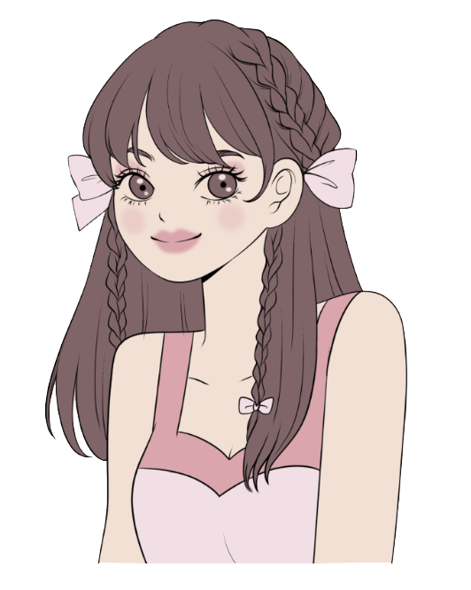
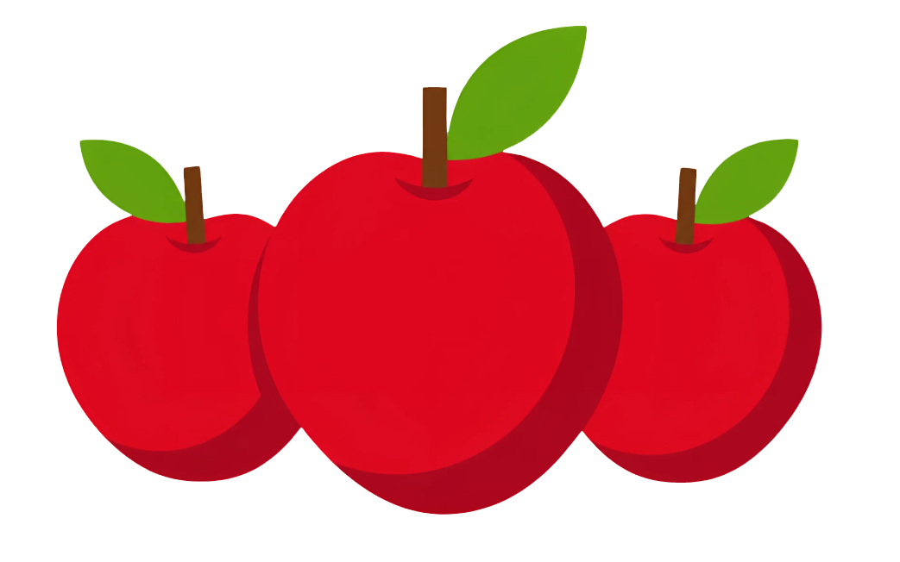
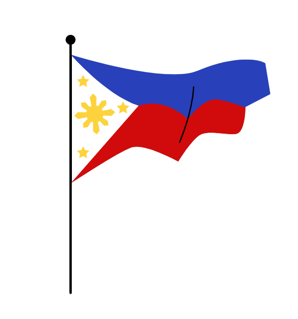

Tuklasin ang mga Salitang Naglalarawan!Ano ang Pang-uri?
Ang pang-uri ay bahagi ng pananalita na naglalarawan o nagbibigay ng karagdagang impormasyon tungkol sa pangngalan at panghalip. Ginagamit ito upang ilarawan ang katangian, kulay, hugis, laki, lasa, amoy, bilang, at iba pang katangian ng tao, hayop, bagay, lugar, o pangyayari.
Sa madaling salita, ang pang-uri ay salitang tumutulong upang mas maging malinaw at makulay ang ating mga pangungusap.
Mga Halimbawa
Ang bata ay masipag.
Ang bulaklak ay mabango.
Ang mangga ay matamis.
Ang aso ay maliit.
Ang silid-aralan ay malinis.
Pansinin: Ang mga salitang masipag, mabango, matamis, maliit, at malinis ay mga pang-uri dahil inilalarawan nila ang tao, bagay, hayop, o lugar.
Mga Layunin sa Pagkatuto
Pagkatapos pag-aralan ang aralin, ang mga mag-aaral ay inaasahang:
Maipaliwanag ang kahulugan ng pang-uri.
Matukoy ang mga pang-uri sa loob ng pangungusap.
Makilala ang iba't ibang uri ng pang-uri.
Magamit nang wasto ang mga pang-uri sa pagbuo ng pangungusap.
Maipakita ang pag-unawa sa pang-uri sa pamamagitan ng mga gawaing pampagkatuto.
Mga Uri ng Pang-uri
May tatlong uri ng pang-uri na ating pag-aaralan.

A. Pang-uring Panlarawan
Ito ay pang-uring naglalarawan ng katangian o kalagayan ng tao, hayop, bagay, lugar, o pangyayari.
Mga halimbawa:
Mabait na bata
Magandang bulaklak
Malinis na bahay
Matamis na mangga
Mabilis na kabayo
Halimbawa sa pangungusap:
Si Ana ay isang mabait na bata.
Ang rosas ay pula at mabango.
Paliwanag: Ang mga salitang mabait, pula, at mabango ay naglalarawan ng katangian ng tao at bulaklak.

B. Pang-uring Pamilang
Ito ay pang-uring nagsasaad ng bilang, dami, o pagkakasunod-sunod ng pangngalan.
Mga halimbawa:
Tatlong lapis
Limang aklat
Sampung kendi
Ikalawang pangkat
Unang gantimpala
Halimbawa sa pangungusap:
May tatlong mangga sa mesa.
Si Carlo ang unang nakatapos ng gawain.
Paliwanag: Ang mga salitang tatlong at unang ay nagsasaad ng dami at pagkakasunod-sunod.
Ilang halimbawa ng pang-uring pamilang:
Patakaran: isa, dalawa, tatlo, apat. Nagsasaad ng tiyak na bilang.
Panunuran: una, ikalawa, ikatlo. Nagsasaad ng pagkakasunod-sunod.
Pamahagi: kalahati, sangkapat. Nagsasaad ng bahagi ng isang kabuuan.
Palansak: tig-iisa, tig-dadalawa. Nagsasaad ng pangkat o pagkakahati-hati ng bilang.

C. Pang-uring Pantangi
Ito ay pang-uring nagmula sa pangngalang pantangi. Ginagamit ito upang ilarawan ang isang tao, bagay, pagkain, kultura, o lugar batay sa pinagmulan o kaugnayan nito sa isang tiyak na pangalan.
Mga halimbawa:
Kulturang Pilipino
Pagkaing Ilokano
Sayaw na Tinikling
Produktong Cebuano
Kulturang Tsino
Halimbawa sa pangungusap:
Ipinagmamalaki natin ang kulturang Pilipino.
Masarap ang mga pagkaing Ilokano.
Paliwanag: Ang mga salitang Pilipino at Ilokano ay nagmula sa mga pangngalang pantangi at ginagamit upang ilarawan ang kultura at pagkain na may kaugnayan sa isang partikular na pangkat o lugar.
Paano Ginagamit ang Pang-uri?
Ginagamit ang pang-uri upang magbigay ng mas malinaw na paglalarawan sa isang pangngalan o panghalip. Tingnan ang pagkakaiba:
Walang Pang-uri
May Pang-uri
Kumain ako ng mangga.
Kumain ako ng matamis na mangga.
Nakita ko ang aso.
Nakita ko ang maliit na aso.
Pumasok ang bata.
Pumasok ang masipag na bata.
Paliwanag: Mapapansin na mas nagiging malinaw ang pangungusap kapag gumagamit tayo ng pang-uri. Mas nalalaman natin kung ano ang katangian ng mangga, aso, at bata.
Bakit Mahalaga ang Pang-uri?
Nagbibigay ito ng malinaw na paglalarawan. Mas madaling mailarawan sa isip ang tao, hayop, bagay, at lugar.
Nagpapaganda ito ng pangungusap. Nagiging mas kawili-wili at makabuluhan ang ating mga sinasabi at sinusulat.
Tumutulong ito sa pagpapahayag ng ideya. Mas naipapaliwanag natin nang maayos ang ating iniisip.
Nagdaragdag ito ng detalye. Mas nauunawaan ng nakikinig o nagbabasa ang ating mensahe.
Tandaan! "Ang pang-uri ay salitang naglalarawan na nagbibigay-kulay at kahulugan sa ating mga pangungusap!" Ginagamit ito upang ilarawan ang pangngalan at panghalip. Sa pamamagitan nito, mas nagiging malinaw at makabuluhan ang ating mga sinasabi at sinusulat.